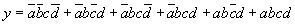
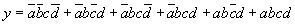

CS-341 First Exam – Fall 2001
1. What is the 8-bit two’s complement representation of the decimal value +?
2. What is the 8-bit two’s complement representation of the decimal value ?
3. What is the plain binary representation of the decimal value +? Show your work.
4. What is the IEEE-754 32-bit representation of the decimal value +? Show your work.
5. Define the term “propagation delay.”
6. Define the term “fan-out.”
7. Show how to construct a 2-input XOR gate using ANDs, ORs, and Inverters.
8. Draw the gates to implement a ´ decoder. Label all inputs and outputs.
9. Draw the gates to implement an ´ 1 multiplexer. Label all inputs and outputs.
10. Draw the gates to implement a full adder. Label all inputs and outputs.
11. Show how to construct a 4 ´ 1 multiplexer using a 2 ´ 4 decoder and 4 tristate buffers. Draw the decoder as a box (i.e., don’t show the gates inside it). Label all inputs and outputs.
12. Write the truth table for the following function.
 

13. Minimize the function above using a Karnaugh Map. Be sure to write the minimized equation.
14. Construct a two-column table showing how many inverters, AND, and OR gates would be needed to implement both the unminimized and minimized versions of the function.
15. Show how to implement the unminimized version of the function using a 8 ´ 1 multiplexor. Draw the multiplexer as a box (i.e., don’t show the gates inside it).